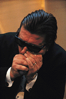
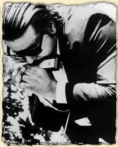
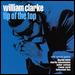
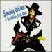
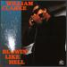
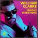
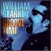
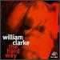
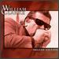

Дискография & Музыка
Дискография & Музыка
Кларк Уильям (12 марта 1951, Инглвуд, Калифорния - 2 ноября 1996, Фресно, Калифорния) - американский блюзовый певец, исполнитель на губной гармонике, композитор, аранжировщик. Довольно поздно пришел на профессиональную сцену, в первой половине 90-х годов стал безусловным лидером в области современного чикагского блюза и значительно обогатил возможности использования в нем губной гармоники.Родился в рабочей семье. Блюз открыл для себя, выясняя, кто автор наиболее симпатичных ему песен в альбомах ROLLING STONES 60-х годов. Подростком слушал клубные выступления Ти-Боун Уокер (T-Bone Walker), Биг Джо Тернера (Big Joe Turner), Лоуэлла Фулсона (Lowell Fulson), Биг Мамы Торнтон (Big Mama Thorton). Пытался играть на ударных, гитаре. Первыми учителями в игре на хроматической гармонике стали "Шейки" Джейк Харрис (Shakey Jake Harris) и Джордж "Гармоника" Смит (George Harmonica Smith), участник блюз-бэнда Мадди Уотерса (Muddy Waters). Окончив общеобразовательный колледж, проработал почти 20 лет заводским механиком, исполняя блюз по вечерам и уикэндам. Аккомпанировал на записи альбомов более известных блюзменов. Поддерживал во время выступлений Джорджа "Гармонику" Смита вплоть до смерти последнего в 1983.
С 1978 по 1988 на собственные средства записал и выпустил пять альбомов. Несмотря на то, что ни один из альбомов не получил распространения на национальном уровне, в этот период Уильям Кларк шесть раз номинировался на премию имени У. К. Хэнди. Однако практически он оставался известен только узкому кругу знатоков калифорнийской блюзовой сцены. Спродюсированный на собственные средства шестой альбом привлек внимание фирмы Alligator и был переиздан на национальном уровне в 1990. Альбом вызвал сенсацию, знаменовав появление на блюзовой сцене сложившегося, зрелого мастера, обладавшего свежими, оригинальными идеями и энергетикой, необходимой для их воплощения. Песня Must Be Jelly из этого альбома принесла ему первую премию имени У. К. Хэнди в категории "Блюзовая песня года". Последовавшие альбомы и гастроли по США и Европе закрепили его репутацию лидера в своем направлении. Первые три альбома представляли обновленный чикагский стиль. Но следующий, окрашенный джазовыми тонами альбом Hard Way продемонстрировал значительное расширение стилевых границ в сторону уэст-коуст-блюза. Очевидно, достигнув высот исполнительского мастерства, Уильям Кларк стоял на пороге нового творческого этапа. Внезапная смерть от кровотечения язвы желудка, настигшая его за несколько часов до очередного клубного выступления, оборвала его жизнь.
Андрей Евдокимов
(Энциклопедия Кирилл и Мефодий)

Мне очень повезло - в середине 60-х гг я слышал живьем великих чикагских исполнителей на гармонике - Little Walter, Junior Wells, Big Walter Horton и многих других в клубах Чикаго. Но все это в прошлом, и надежда хоть раз еще в жизни услышать новый голос усиленной комбиком блюзовой гармоники почти покинула меня. Тогда появился William Clarke. С технической точки зрения, Кларк - мастер и диатонической, и хроматической гармоники одновременно. Он развил технику блюза на хроматике по сравнению с тем состоянием, в котором Little Walter оставил ее много лет назад. Но его музыка гораздо важнее техники. Кларк играет прямолинейный блюз, который - есть музыка для ушей, и музыка эта потрясает.Вильям Кларк родился 29 марта 1951 г. в Инглвуде, штат Калифорния, и пришел к блюзу в 60-е годы довольно необычным путем - слушая версии блюзовых стандартов в исполнении таких групп как Rolling Stones. Хотя он немного играл на гитаре и ударных, в 1967 году Кларк переключился на гармонику. Он говорил, что в начале на него очень сильно повлияли Big Walter Horton, James Cotton, Junior Wells и Sonny Boy Williamson II. Позже, в середине 1968 года, Кларк начал слушать джазовых органистов, таких как Jack McDuff, Jimmy McGriff, Shirley Scott и Richard "Groove" Holmes. "Это имело огромное влияние на мою манеру игры" - говорил Кларк. "Вместе с джазовыми саксофонистами Eddie Lockjaw Davis, Gene Ammons, Lyne Hope и Willis Jackson, прослушивание и впитывание мелодических линий (grooves) органных трио с ведущим тенор-саксофоном в течение длительного времени возымело сильное влияние на мой выбор музыкального направления. В своем стиле я объединил суть подхода и звучания классических чикагских гармонистов со свингующими и чрезвычайно ритмичными линиями органных трио, а уже к этому я добавил свои личные идеи и стиль, вот так получился "звук Вильяма Кларка".
В середине 1969 года Кларк проводил массу времени в клубах лос-анжелесского гетто - в Южно-Центральном Лос Анжелесе. Там он познакомился с T-Bone Walker, Pee Wee Crayton, Shakey Jake Harris, Big Joe Turner, Ironing Board Sam, J.D. Nicholson и George "Harmonica" Smith, который впоследствии в наибольшей степени повлиял на Кларка в том, что касается хроматической гармоники. Кларк отправлялся в какой-нибудь клуб, оставаясь там до закрытия в 2 часа ночи, перемещался в after-hours клуб, работавший до 6 утра, а затем отправлялся на джем-сейшн, который мог продолжаться до 11-ти. И после этого выдерживал рабочий день! Кларк провел 20 лет работая машинистом будучи примерным семьянином до того момента, как он начал свою блюзовую карьеру.
После Кларк начал больше слушать George "Harmonica" Smith - ветерана группы Мадди Уотерса. Кларк говорил: "Для меня George был чем-то большим, чем моя жизнь.Я всегда боялся начать с ним разговор, но не потому, что Смит был слишком важным, а потому что я представлял его себе "богом гармоники". Но где-то в 1977 они подружились и стали выступать вместе. Они продолжали совместно работать вплоть до смерти Смита в 1983 году. Кларк был протеже Джорджа Смита, который стал крестным отцом его сына Вилли. Он говорил: "Джордж и я были очень близкими друзьями, и во многих вещах он был мне как отец".
Кларк записал множество альбомов до того, как выпустил первый компакт диск. Это Hittin' Heavy (Good Time, 1978), Blues from Los Angeles (1980), Can't You Hear Me Calling (Watch Dog, 1983), Tip of the Top (Satch, 1987 - номинирован на награду Хэнди) и Rockin' the Boat (Riviera, 1988). Хэнди он получил в 1991 году за лучшую блюзовую песню года "Must Be Jelly", и при этом был номинирован в 6 категориях.
В начале - середине 90х Кларк записал серию альбомов для Аллигатора, и все из них заслуживают прослушивания. На мой взгляд, истинное наследие Вильяма Кларка можно найти на первых двух аллигаторовских альбомах Blowin' Like Hell и Serious Intentions. Blowin' Like Hell, в особенности, - это один из тех классических альбомов, который должен иметь в коллекции каждый.
Кларк написал большинство исполняемых им песен, и многие из них - настоящие "ловцы человеческих (д)уш" (ear-catchers). Он вышел родом из рабочего класса, и такие замечательные песни, как "Gambling for my Bread" и "Pawnshop Bound" - просто о деньгах.
Как и множество других великих от блюза до него, Вильям Кларк играл, как и жил сурово. Он и его группа много путешествовала на автомобиле, перемещаясь между западным побережьем и средним западом в бесконечном пути, состоящем из остановок на одну ночь в дешевых отелях, коротких концертов, перекусывая на ходу и чересчур обильно запивая. Вильям Кларк умер на операционном столе в городе Фресно, Калифорния 2-го ноября 1996 года. Ему было всего 45 лет. Его очень не хватает в мире блюза.
Вильям Кларк (вместе с Big Walter Horton и Paul Butterfield) имел практически безукоризненное чувство того, какие ноты играть. Сейчас есть много исполнителей (белых и черных), кто в основном играет воспроизводя то, что записано на пластинках великих чикагских музыкантов. Ничего плохого в этом нет, но и ничего нового - тоже. Кларк был оригинальным. Слушая его музыку множество раз, я смог почувствовать, что в ней есть первоклассная вещь - продолжение и развитие классических традиций чикагской усиленной гармоники в современности. Просто послушайте пару первых аллигаторовских альбомов - они все есть на CD.
Michael Erlewine
(перевод Федора Романенко)
Дискография & Музыка| Blues Harmonica, Watch Dog |
Вильям Кларк выступал с концертами в течении длительного времени перед изданием первого CD на Аллигаторе, принесшего ему общенациональную известность. И зрелым блюзовым музыкантом он стал задолго до этого события. Начиная с 1978 года WC записал 6 пластинок, большинство из них вышли на виниле маленькими тиражами около 1000 экземпляров и осели в домашних коллекциях. А сейчас их практически невозможно достать. Блюзовые звукозаписывающие фирмы, в частности - Аллигатор, поступают довольно странно, не переиздавая эти диски на CD, и сделав лишь пару исключений. Можно предположить, что материал - очень качественный, и это подтверждает, например, опыт переиздания диска Tip Of The Top. Сам Вильям Кларк - неоднократный обладатель премий Хэнди, достаточно популярный аллигаторовский артист и кумир для многих блюзовых гармонистов. Логики в этом довольно мало... Поэтому, остается только ждать и надеяться. Соответственно, про содержимое этих альбомов вам никто рассказать не сможет. |
| Hittin' Heavy, Good Times, 1978 |
|
| Blues from Los Angeles, Hittin' Heavy, 1980 |
|
| Can't You Hear Me Calling, Rivera, 1983 |
|
| Rockin' the Boat, Riviera, 1988 |
|
 Tip of the Top, King Ace, 1987, 2000 |
Изданный в оригинале на
виниловой пластинке маленьким тиражем,
этот диск является примером
относительно позднего "зрелого"
Вильяма Кларка, которого можно услышать
на аллигаторовских дисках, ведь от
первого Blowin' Like Hell его отделяет всего
три года. Эта запись лежала на полках
коллекционеров винилового антиквариата,
пока фирма King Ace не сделала подарок
любителям WC - выкупила права и
переиздала его в 2000 году. В диск вошли
дополнительно 4 замечательные неизданные
композиции более поздего
аллигаторовского периода. Перед
публикацией диска King Ace обещала, что это
только начало, но похоже, - пока дело встало.
Drinkin' Beer |
 Smokey Wilson & The William Clark Band, Black Magic, 1989, 1997 |
Этот диск Вильям Кларк со своей группой записал с главной целью - поддержать недостаточно известного и оцененного гитариста Smokey Wilson-а. Импровизация и аранжировки Кларка и компании на этом диске проявляются не так ярко, ибо группа играет по чужим правилам. А сами партии на гармонике сдержаны и выступают в оформительской, а не в солирующей роли. Одним словом, диск может быть интересен ценителям, но сам по себе - скучноват. |
 Blowin' Like Hell, Alligator, 1990 |
Это первый широко изданный диск, который Вильям Кларк изначально спродюссировал на свои средства. Многие любители музыки Кларка называют его лучшим и самым "блюзовым из блюзовых". На альбоме записаны гитаристы Алекс Шульц, Зак Занис и Рик Холмстром, которые попеременно сопровождали Кларка на остальных записях в качестве вторых солистов его ансамбля. Ибо гитара, как ни крути, - основополагающий для блюза инструмент. Они же стали в 90-х ядром "тусовки современного блюза", записываясь и выступая с Билли Бой Арнольдом, Родом Пьяццой, Робертом Лукасом и другими. На диске есть ряд композиций, которые не просто являются крепко и супер-качественно сделанными блюзами, но и значительно расширяют возможности "блюзовой гармоники". Фактически, Кларк изобрел современное звучание блюзовой хроматической гармоники, ярким примером которого может являться лирический инструментал Greasy Gravy. Lollipop Mama |
 Serious Intentions, Alligator, 1992 |
Еще один великолепный альбом с духовой секцией, попеременно Шульцем и Занисом на гитаре. Еше 50 минут схожего по стилю удовольствия, но, при этом, - ДРУГОГО. На пластинке есть множество новых музыкальных идей, которые было бы странно пытаться пересказывать словами. Pawnshop Bound |
 Groove Time, Alligator, 1994 |
На альбоме Groove Time Кларк записался с Алексом Шульцем, которому местами помогал Кид Рамос, в сопровождении духовой секции на части треков. Великолепные легко-сыгранные джампин-свингин-шаффлы перемежаются с медлеными очень традиционными, но одновременно отточенными с позиций современного блюзового мастерства композициями с выделяющейся гитарой Шульца и глубокими риффами на хроматической гармонике. Blowin' the Family Jewels |
 The Hard Way, Alligator, 1996 |
Последняя работа WC, изданная за
три месяца до его смерти. Этот альбом
демонстрирует очень интересное
развитие музыкального стиля Кларка,
которое через некоторое небольшое время
могло бы привести к удивительным
музыкальным результатам. Однако нелепое
стечение обстоятельств прервало эту
историю на самом интересном месте. На
альбоме Кларк экспериментирует с
сочетанием звука хроматической
гармоники, выступающей в роли саксофона,
и духовой секции. Визитной карточкой
альбома является первый инструментал The
Boss. Вся музыкальная интрига построена на
бесконечном свингующем соло гармоники,
сыгранном на одном дыхании, с постоянным
развитием мелодии, которая повторяется
только на рефрене. В этом проявляется
потрясающая музыкальность Кларка,
который способен вынуть из известного
набора ступеней стандартной
тональности бесконечное количество
неслучайных осмысленных мелодических
линий. И действительно, кто еще мог
сыграть в студии продуманное
соло на 5 минут на одном инструменте без
повторов и случайных заполняющих
последовательностей, да так, чтобы его
слушали затаив дыхание?
The Boss |
 Deluxe Edition, Alligator, 1999 |
Переиздание - сборник, составленный из песен с 4-х основных альбомов, дополненный тремя неизданными на CD бонус-треками. Аллигатор долго обещал выкупить права и переиздать LP-пластинки Вильяма Кларка, но за прошедшие 5 лет после его смерти так этого и не сделал. Эти три песни - неизданные остатки записей в аллигаторовской студии, - все, чем Аллигатор нас пока порадовал. |
Федор Романенко